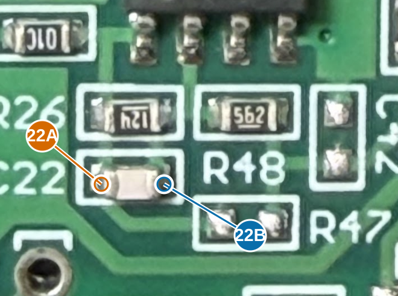

v0.9.45 | In-circuit batch completed; no active measurement form
No new bench readings requested. All components remain fitted; scope work remains deferred.
C21: 680 / 340 / 240 pF; C22: 680 / 320 / 240 pF at 1 / 10 / 100 kHz. Meter mode was C/Auto or unsure; D was not reported. Review provisional values by circuit function before selecting any further measurements.
21A: C21 left metal end in this picture; not the resistor R24 underneath.
21B: C21 right metal end; place the other tweezer tip here.
ID
Tip 1
Tip 2
Condition
Reading
B86
21A
21B
Unpowered; 1 kHz; 0.1 V RMS; fitted
680 pF; Cp/Cs unconfirmed; D not reported
B87
21A
21B
Unpowered; 10 kHz; 0.1 V RMS; fitted
340 pF; Cp/Cs unconfirmed; D not reported
B88
21A
21B
Unpowered; 100 kHz; 0.1 V RMS; fitted
240 pF; Cp/Cs unconfirmed; D not reported
C22: the ceramic capacitor directly below R26

22A: C22 left metal end in this picture; not the resistor R26 above it.
22B: C22 right metal end; place the other tweezer tip here.
ID
Tip 1
Tip 2
Condition
Reading
B89
22A
22B
Unpowered; 1 kHz; 0.1 V RMS; fitted
680 pF; Cp/Cs unconfirmed; D not reported
B90
22A
22B
Unpowered; 10 kHz; 0.1 V RMS; fitted
320 pF; Cp/Cs unconfirmed; D not reported
B91
22A
22B
Unpowered; 100 kHz; 0.1 V RMS; fitted
240 pF; Cp/Cs unconfirmed; D not reported
The frequency dependence and unspecified equivalent mode prevent treating these as isolated nominal values. The capacitor review separates reference-based replacement choices, conditional candidates and unresolved RF/filter parameters.
Nothing is sent automatically. Copy and paste into the chat, or download a text file.
What follows
Recover critical component values - All 44 unknown ceramics have numerical design candidates, ratings and dielectrics: 12 supply, 17 signal/timing and 15 RF-bank seeds. Validation remains; no broad measurement batch is active.
Finish interface and package mapping - LED colour branches and J5 board-contact/output mapping are established. LED footprint, connector fit and external motor harness orientation remain reproduction qualifications.
Resolve hidden paths and device behavior - RF feed/output wiring, switch contacts and front-bank ANT2 routing are supported. Candidate device roles remain unresolved. TP11/TP17 routes are complete as drawn, with hidden-layer uncertainty retained as a reconstruction limitation. Scope work and component isolation are deferred by owner.
ERC: 1 retained U6/U6A output conflict. U6A is DNP; its regulator symbol remains by your request. Other source and library findings are resolved.